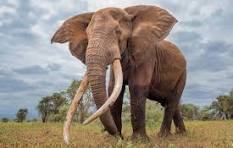

Elephants are one of the most revered and iconic species in India. Known for their intelligence, strength, and social behavior, elephants have been a vital part of Indian wildlife and culture for centuries. In India, the Asian Elephant (Elephas maximus) is the native species found primarily in forested regions across the country.
Types of Elephants

1. Asian Elephant (Elephas maximus)
Found in India, Sri Lanka, Thailand, and Southeast Asia. Smaller ears, dome-shaped head, and used widely in cultural rituals.
2. African Bush Elephant
Largest elephant species. Not found in India. Huge ears, longer tusks, and robust body structure.
3. African Forest Elephant
Smallest of the three types. Endemic to Africa. Known for shorter, straighter tusks and deep forest habitat.
Asiatic Elephant (Elephas maximus indicus)
The Indian elephant is a subspecies of the Asian Elephant, scientifically known as Elephas maximus indicus. Native to the Indian subcontinent, this magnificent mammal plays an essential ecological role by dispersing seeds and maintaining forest biodiversity.
These elephants are typically found in herds, led by a matriarch. They are highly social, intelligent, and capable of forming strong emotional bonds with other elephants. Unlike African elephants, only a few Indian male elephants have tusks, while females never do.
Asiatic elephants prefer forested habitats including grasslands, tropical moist forests, and dry deciduous forests. Their diet is herbivorous, consisting of grasses, fruits, roots, bark, and crops, which sometimes brings them into conflict with humans. As migratory animals, they follow ancient corridors to travel long distances in search of food and water.
In India, the Indian Elephant is regarded as culturally sacred and is often associated with Lord Ganesha in Hindu mythology. Despite the respect they receive, they are endangered due to habitat loss, railway accidents, human-elephant conflict, and poaching for ivory.
Habitat and Distribution in India
Indian elephants are found in the forested regions of southern, eastern, and northeastern India, and in the foothills of the Himalayas. They inhabit tropical evergreen forests, grasslands, deciduous forests, and semi-evergreen jungles.
Southern India: Karnataka, Kerala, Tamil Nadu
Northeast: Assam, Arunachal Pradesh, West Bengal
Central India: Odisha, Jharkhand, Chhattisgarh
Northern India: Uttarakhand, Uttar Pradesh
Classification of Indian Elephants
In India, elephants are classified as a subspecies of the Asian Elephant known as Elephas maximus indicus. This subspecies is characterized by:
Smaller ears than African elephants
Male elephants may or may not have tusks (called “makhna” when tuskless)
Smoother skin and less wrinkled body
Domed head with twin bumps
Conservation Projects and Government Efforts
Due to habitat fragmentation, poaching, and human-elephant conflict, Indian elephants are classified as “Endangered” on the IUCN Red List. The Indian government and various NGOs have launched multiple conservation efforts:
Project Elephant (1992): Launched by the Ministry of Environment and Forests to ensure long-term survival of elephant populations. Focuses on habitat preservation, reducing conflict, and welfare of domesticated elephants.
Elephant Reserves: 33 Elephant Reserves covering major elephant corridors and habitats such as Nilgiri, Mayurjharna, Singhbhum, and Kaziranga-Karbi Anglong.
Monitoring of Illegal Killing of Elephants (MIKE): A program by CITES in which India participates to track poaching and illegal ivory trade.
Conclusion
Indian elephants are a symbol of biodiversity and ecological balance. Protecting them is not only a matter of national pride but an urgent necessity. With continued conservation efforts and public awareness, we can ensure that future generations witness these majestic giants roaming free in the wild.